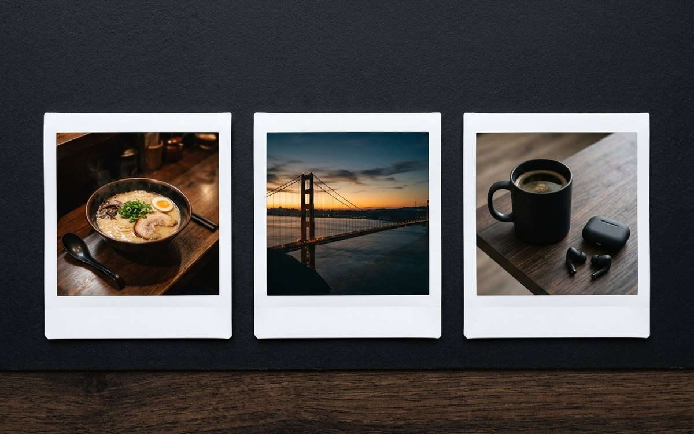
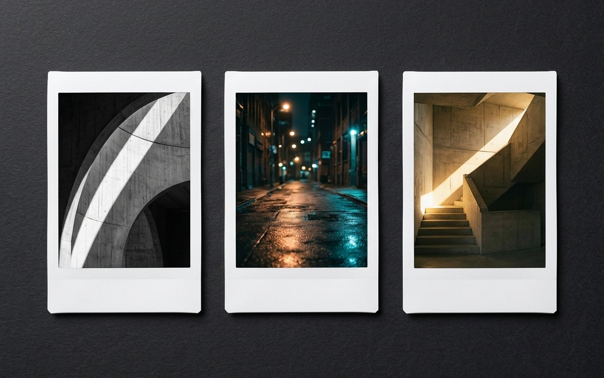
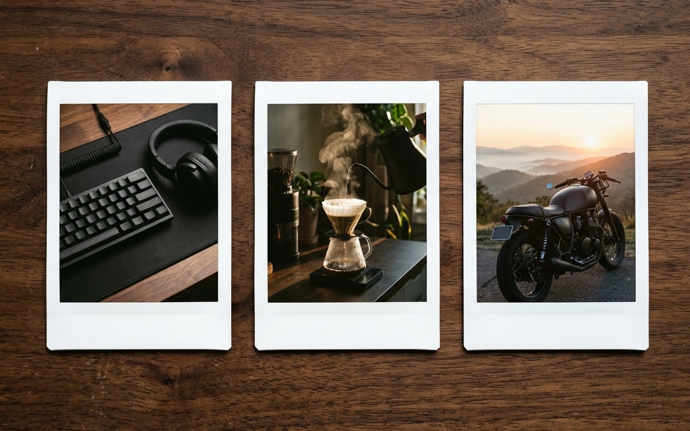
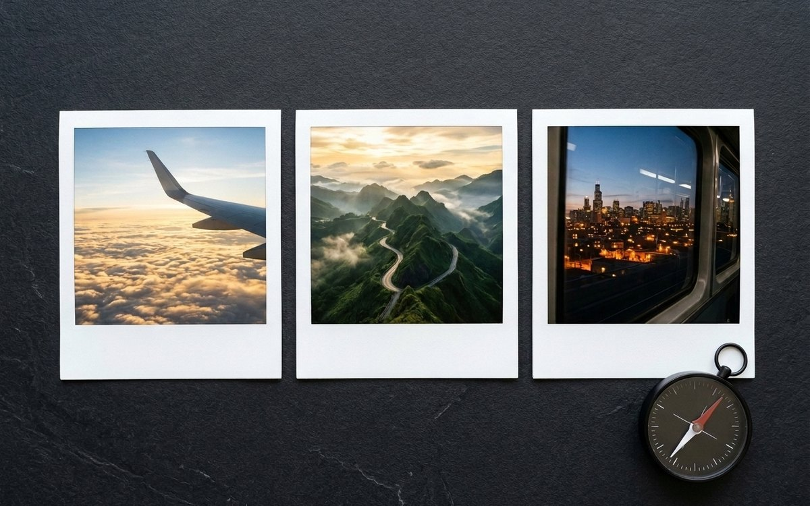

🌱 免費就能用
IDEA 16
🤝 「被拉進共享手帳」1 秒無痛模式
「另一半或朋友傳連結叫我一起寫，但我根本懶得修圖，也不想裝太可愛的 App…」
不用註冊帳號、不會用到你自己的 iCloud 空間（照片算建立者的）。拍張晚餐、咖啡或窗外夕陽直接存進去，不加任何貼紙，1 秒完成任務又顯得超用心。
👥 免費共享手帳🔐 免帳號零容量負擔⚡ 1 秒拍完交差
免辦帳號、不花錢、不佔你的 iCloud 容量，還能零貼紙只留乾淨白框與日期——連不愛寫日記的務實派，也能 1 秒無痛交差、順便養出自己的街拍與裝備圖鑑。


🌱 免費就能用「另一半或朋友傳連結叫我一起寫，但我根本懶得修圖，也不想裝太可愛的 App…」
不用註冊帳號、不會用到你自己的 iCloud 空間（照片算建立者的）。拍張晚餐、咖啡或窗外夕陽直接存進去，不加任何貼紙，1 秒完成任務又顯得超用心。

🌱 免費就能用「手機裡拍了一堆好看的建築光影和雨夜街景，卻跟發票截圖全混在一起…」
只留乾淨白框與極簡日期、零可愛貼紙，把平常隨手拍的城市建築、黑白幾何光影與雨夜倒影自動排成整面攝影聯絡表，翻起來像個人攝影集。

🌱 免費就能用「機械鍵盤、手沖豆單、露營裝備、重機單車或精釀酒標，想記錄又懶得開筆記表…」
每次入手新裝備、換新豆子或清晨跑山，隨手拍一張就自動印好日期收進手帳牆。幾個月後往回看，就是一面超硬核的個人收藏與進化史。

🌱 免費月曆 ＋ ★ VIP 地圖「一年出差或騎車跑了好幾個縣市與國家，年底卻只記得忙，忘記走過哪裡。」
把足跡地圖當成 RPG 解鎖地圖！走過的每座城市自動點亮郵戳——只記城市名稱、絕不存精確 GPS 座標，隱私滿分又有收集成就感。
不喜歡可愛小狐狸放在手機桌面？我們正一步步把「低調俐落」的選項補齊：v1.1 即將推出一鍵切換「簡約風格」（無濾鏡、不自動配貼紙、純白框配打字機日期）；v1.2 規劃加入極簡深色介面與 6 款金屬皮革質感相機 App 圖示（曜石黑鈦、原色鈦銀、焦糖黃銅、英倫橄欖、午夜深藍、碳纖暗紅），買斷 VIP 未來更新直接解鎖！


No account signup, zero cost, zero personal iCloud storage used. Keep pure unadorned white frames and crisp dates—effortless for your partner's album, sleek enough for street photography and EDC gear.
“My partner sent me a shared journal link, and I have zero interest in decorating photos…”
No signup and zero personal iCloud storage used (photos live in the creator's space). Snap dinner, coffee, or a skyline with zero stickers—done in one second, and they’ll love seeing your day.
“My favorite urban geometry and rainy night shots always get buried under receipts and screenshots.”
Skip stickers completely and keep crisp white frames with minimal dates. Your monochrome concrete, moody alleys, and light studies line up cleanly like a gallery contact sheet.
“Custom keyboards, pour-over beans, motorcycles, camp gear—I want a dated log without spreadsheets.”
Snap every new pickup, morning brew, or dawn ride. MoriSnap stamps the date automatically and builds a crisp visual archive of your hobbies and gear evolution.
“Between business flights and weekend mountain rides, I forget half the cities I visited this year.”
Treat the Footprint Map like unlocking fog-of-war in a game. Every visited city earns a postmark—storing only city names, never exact GPS coordinates.
Prefer a stealth, rangefinder-camera look on your Home Screen? v1.1 adds one-tap Minimal Style (no filter, no auto-stickers, clean white frame + typewriter date). v1.2 is planned to bring a Matte Minimal Dark UI and 6 metallic/leather camera app icons (Obsidian Gunmetal, Natural Titanium, Espresso Brass, British Olive, Midnight Navy, Stealth Carbon)—included free for lifetime VIPs!
会員登録なし・無料・自分の iCloud 容量消費ゼロ。ステッカーを外してシンプルな白枠と日付だけで撮れるので、街撮り・ガジェット・愛車の記録にもぴったりです。
「恋人や友だちに共有手帳へ誘われたけど、加工もデコレーションも正直めんどくさい…」
登録不要・あなたの iCloud 容量は使いません。ラーメンや珈琲、夕暮れの橋をステッカーなしでパシャッと入れるだけで、1 秒で喜ばれる共有が完了します。
「気に入って撮った建築や雨の路地が、スクショや領収書に埋もれてしまう…」
ステッカーを一切つけず、潔い白枠と日付だけで保存。モノクロの建築美や雨夜の反射が、写真集のコンタクトシートのように整然と並びます。
「キーボード、キャンプ道具、ハンドドリップ豆、ツーリング記録…表にまとめるのは面倒。」
新しいギアを迎えた日や早朝ツーリングで 1 枚撮るだけ。日付入りで手帳ウォールに並び、自分だけのクールなコレクション図鑑が自然と育ちます。
「出張やドライブで各地を回ったのに、年末にはどこへ行ったかすぐ忘れてしまう。」
RPG のマップ埋めのように、訪れた都市に消印をコレクション！記録するのは都市名のみで正確な位置座標は残らないため、プライバシー面も万全です。
ホーム画面にかわいいアイコンを置くのがちょっと恥ずかしい方へ。v1.1 では設定からワンタップで「シンプルスタイル」（無フィルター・自動ステッカーなし・白枠＋タイプライター日付）に切替可能に。さらに v1.2 ではミニマルダーク UI と金属＆レザー質感のカメラアイコン 6 種を企画中です（買い切り VIP は将来のアップデートも追加料金なし）！
가입 없음·무료·내 iCloud 용량 사용 0. 스티커 없이 깔끔한 화이트 프레임과 날짜만 남길 수 있어 연인 공유용은 물론 거리 스냅·장비 아카이브로도 딱이에요.
“연인이나 친구가 같이 쓰자고 링크를 보냈는데, 사진 꾸미기는 너무 귀찮아요…”
회원가입도 없고 내 iCloud 용량도 쓰지 않아요. 저녁 라멘, 커피, 퇴근길 다리 풍경을 스티커 없이 툭 찍어 올리면 1초 만에 센스 있는 파트너 완성!
“멋지게 찍은 도시 건축과 비 오는 밤골목 사진이 캡처 이미지 사이에 파묻혀 버려요.”
스티커 없이 군더더기 없는 화이트 프레임과 날짜만 깔끔하게. 흑백 콘크리트와 시네마틱 야경이 갤러리 컨택트 시트처럼 정갈하게 정리됩니다.
“기계식 키보드, 핸드드립 원두, 캠핑 장비, 바이크 라이딩… 표로 정리하긴 귀찮아요.”
새 장비를 들인 날이나 새벽 라이딩 때 한 장만 찍어두세요. 날짜가 자동 각인되어 몇 달 뒤엔 나만의 근사한 취미·장비 변천사가 완성됩니다.
“일 년 동안 출장과 드라이브로 여러 도시를 다녔는데, 연말엔 기억이 가물가물해요.”
게임 맵을 밝히듯 다녀온 도시마다 소인을 하나씩 해제해 보세요! 정확한 GPS 좌표는 저장하지 않고 도시 이름만 기록해 프라이버시도 안전합니다.
홈 화면에 귀여운 여우 아이콘을 두기 살짝 쑥스러우신가요? v1.1에서는 설정에서 원탭으로 '심플 스타일'(무필터·자동 스티커 끔·화이트 프레임+타자기 날짜)로 전환할 수 있고, v1.2에서는 매트 다크 UI와 메탈·가죽 질감 카메라 아이콘 6종을 준비 중이에요(평생 VIP는 추후 업데이트도 무료 해제)!